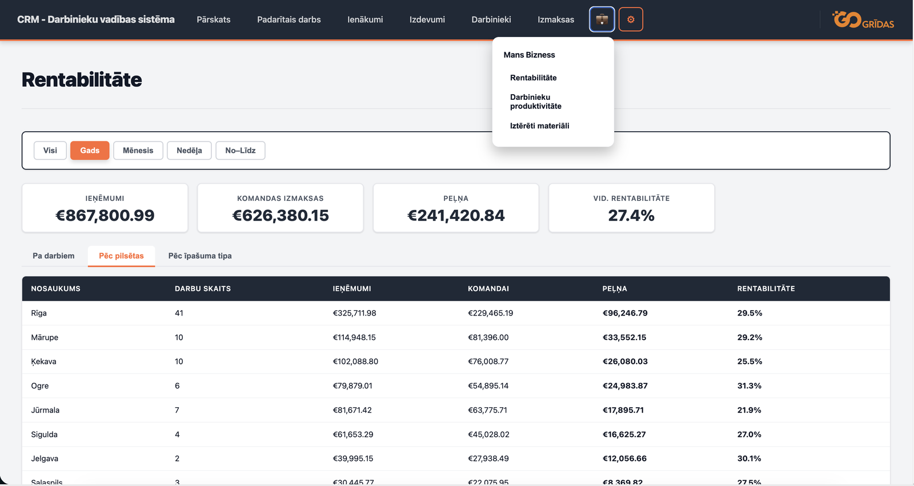
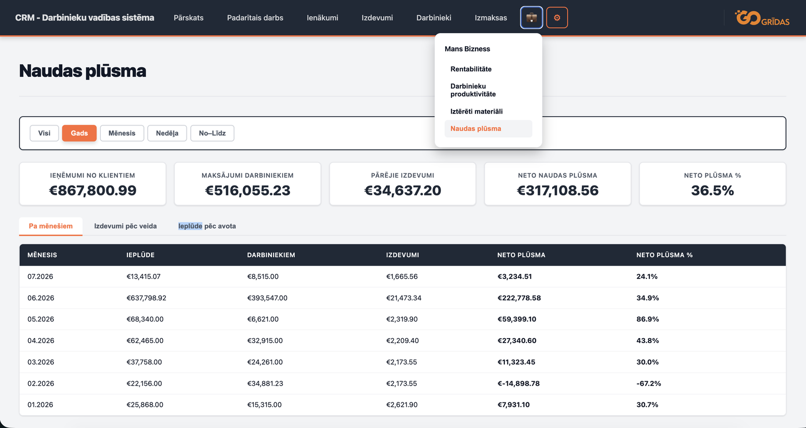
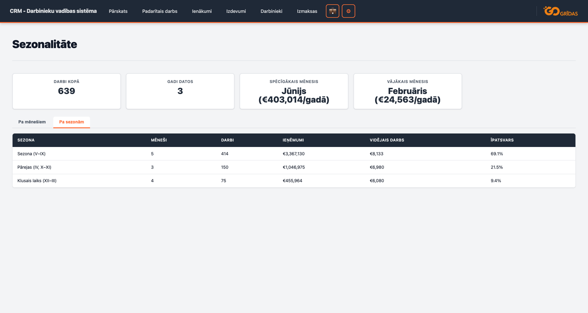
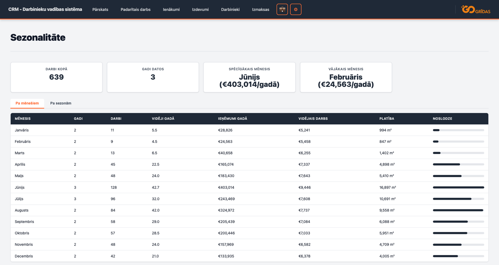
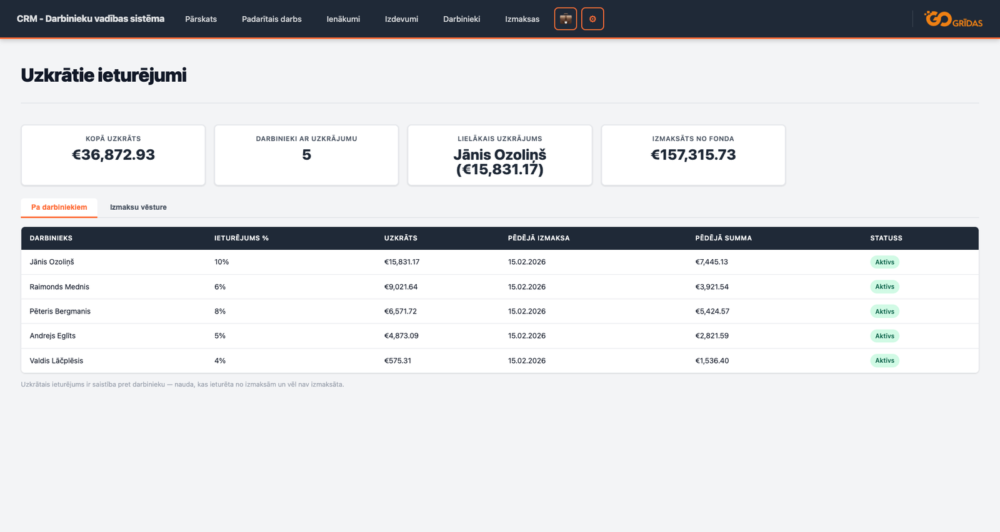
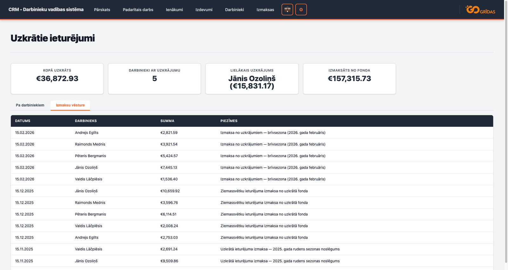
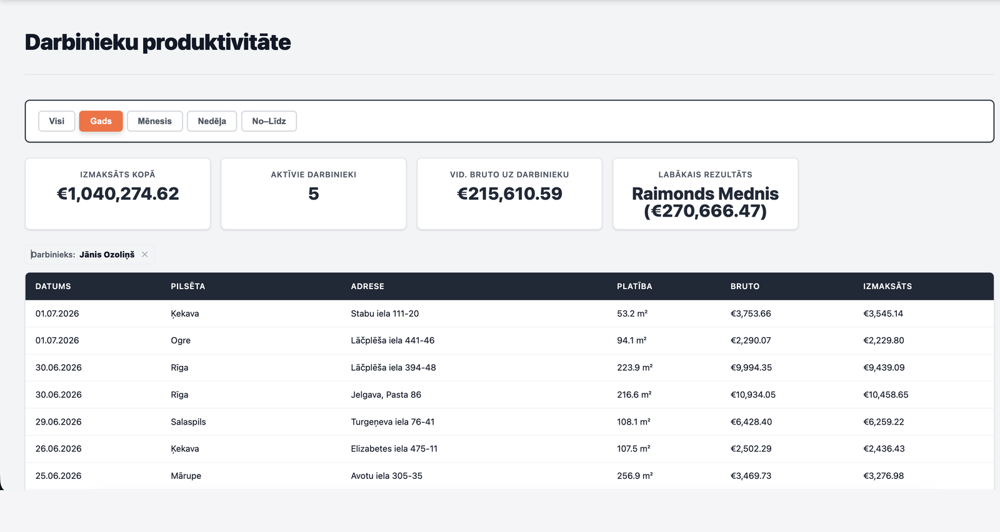
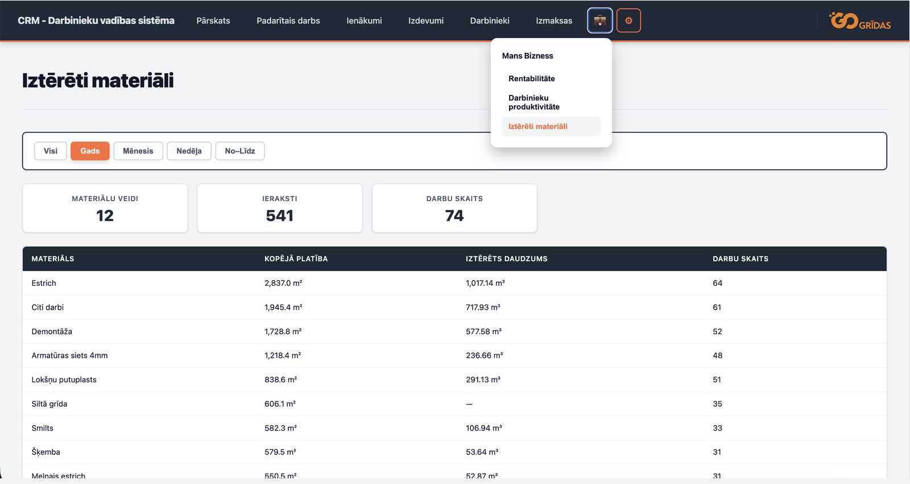
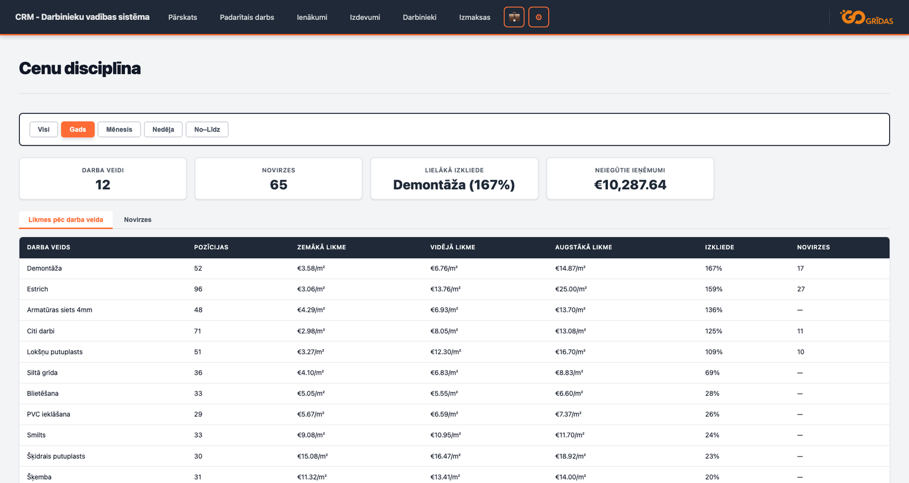

Ekrānuzņēmumos redzami demonstrācijas dati — vārdi, adreses un summas ir izdomātas; reālus klientu skaitļus nerādu. Katrai sistēmai zemāk norādīts godīgs statuss: kas jau tiek ieviests un kas palicis prototipa līmenī.
Go Gridas — CRM būvniecības un remonta uzņēmumiem
Pavelciet, lai skatītu ekrānus
Ikdienas darbs sistēmā
Sāksim ar to, kas notiek katru dienu. Brigadieris telefonā ievada objektu, padarīto darbu, platību, likmi un brigādes sastāvu — turpat, kur darbs notiek. Dati tiek ievadīti vienreiz, un izmaksas tiek aprēķinātas automātiski.
Jūsu bizness
No tiem pašiem datiem — bez atsevišķa darba — salasās pārskati. Vairums mazo uzņēmumu vadās pēc sajūtas: šķiet, ka Rīgā darba visvairāk, ka viena brigāde strādā labāk, ka materiāls izmaksā apmēram tik. Kamēr skaitļi ir galvā un uz papīra, tos nevar pārbaudīt. Šie deviņi pārskati atbild uz jautājumiem, uz kuriem citādi atbild minējums. Skaitļi zemāk ir no demonstrācijas datu komplekta, bet jautājumi un aprēķina loģika ir īsti.

Kur nauda tiešām nopelnās?Apgrozījums viens pats neko nepasaka. Rīgā 41 darbs dod 29.5% rentabilitāti, Jūrmalā 7 darbi — 21.9%. Kamēr šie skaitļi nav atdalīti, reklāmas budžets un laiks tiek dalīts akli. Ar sadalījumu redzams, kur ir vērts spiest vairāk, kur celt cenu un kur labāk atteikties.

Vai nākamajā mēnesī pietiks naudas?Peļņa uz papīra un nauda kontā nav viens un tas pats. Februārī pie 22 156 € ieplūdes izmaksas darbiniekiem bija 34 881 € — gandrīz 15 000 € mīnusā vienā mēnesī. Galvā tādu bedri nepamana, kamēr nav ar ko samaksāt. Sadalīts pa mēnešiem, iztrūkums redzams laikus: var pārcelt iepirkumu, prasīt avansu vai neņemt objektu tieši tajā brīdī.

Cik ļoti bizness ir atkarīgs no sezonas?69% no gada apgrozījuma sanāk piecos vasaras mēnešos, klusajā laikā — tikai 9%. Bez šī skaitļa grūti zināt, cik lielai rezervei jābūt gatavai, pirms sezona beidzas.

Kurā mēnesī tieši sākt gatavoties?Starpība starp spēcīgāko un vājāko mēnesi ir vairāk nekā 16 reizes — Jūnijs dod €403 014 gadā, Februāris tikai €24 563. Ar precīzu ainu pa mēnešiem var laikus palielināt komandu un pirkt materiālu, nevis reaģēt, kad pasūtījumi jau sākušies.

Kā noturēt cilvēkus, kad darba maz?Sistēma no katras izmaksas automātiski ietur 4–10% rezervē, lai ziemā darbiniekiem būtu no kā saņemt izmaksu un viņi nemeklētu darbu citur.

Vai šis tiešām strādā, vai tikai izskatās labi uz papīra?Vēsture rāda reālas izmaksas vairāku gadu griezumā — Ziemassvētkos, rudens sezonas noslēgumā, februāra brīvsezonā. Tas nav teorētisks aprēķins — nauda katru reizi automātiski nonāk pie darbiniekiem.

Cik katrs darbinieks patiesībā izstrādā?Kamēr brigāde ir viena, katra izstrādi un ieturējumus vēl var noturēt galvā. Ar divām tas jau ir sasprindzinājums, ar trim vairs nestrādā — un prēmijas kļūst par attiecību, nevis skaitļu jautājumu. Kad izstrāde un izmaksātais ir blakus, redzams, kuru piekraut vairāk, kuram vajag palīdzēt un vai tiešām vajag jaunu cilvēku. Tieši tas ļauj izaugt pāri tam, ko īpašnieks spēj noturēt personīgi.

Cik materiāla pirkt nākamajai sezonai?541 ieraksts par 12 materiālu veidiem 74 objektos — to galvā nenoturēs neviens. Kad patēriņš ir piesaistīts darba veidam un platībai, sezonas iepirkumu var izrēķināt, nevis uzminēt: mazāk naudas iesaldēts noliktavā un mazāk apstāšanos tāpēc, ka materiāls beidzies objekta vidū.

Cik naudas pazūd nepamanītās cenu novirzēs?Vienam un tam pašam darba veidam (piemēram, Estrich) likme dažādos objektos svārstās no €3,06 līdz €25,00 par m². Kamēr objektu ir daži, katru cenu var paturēt galvā — ar 74 objektiem gadā vairs nē. Sistēma automātiski iezīmē pozīcijas, kas norēķinātas zem 60% no sava darba veida vidējās likmes — šajā demonstrācijas komplektā tādas ir 65. Bez izsekošanas šīs novirzes pamana tikai gada beigās, kad tās vairs nevar labot — ar brīdinājumu tās var apturēt, kamēr darbs vēl notiek.
Pašmitināta CRM sistēma, kas seko līdzi katram darbam no sākuma līdz izmaksai — kādi darbi veikti, kuros objektos, kuras brigādes, kādi izdevumi un cik katram darbiniekam jāizmaksā.
Ieviešanas sarežģītībaVidēja
Var integrēties arCitas biznesa sistēmas un programmas
StatussIzstrādē — top pirmā ieviešana
Kam tas ir piemērots: Būvniecības un remonta uzņēmumiem ar vienu vai vairākām brigādēm, kuriem nepieciešama darbu, izmaksu un izmaksu uzskaite vienā vietā.
Kādu problēmu tas atrisina: Novērš izkaisītu uzskaiti Excel un papīra formā — viss brigāžu darbs, ienākumi, izdevumi un izmaksas vienā sistēmā.
Kāpēc tas atmaksājas biznesam: Deviņi pārskati atbild uz jautājumiem, ko citādi var tikai minēt — kur bizness tiešām pelna, vai nākamajā mēnesī pietiks naudas, cik ļoti ienākumi atkarīgi no sezonas. Lēmumi par cenām, komandas lielumu un iepirkumiem balstās skaitļos, nevis sajūtā.
Ko sistēma pārbauda: Katru pozīciju tā salīdzina ar sava darba veida vidējo likmi un iezīmē tās, kas norēķinātas krietni zemāk. Bez izsekošanas šādas novirzes pamana tikai gada beigās, kad tās vairs nevar labot — ar brīdinājumu tās var apturēt, kamēr darbs vēl notiek. Klāt nāk mazāk manuālu kļūdu algu aprēķinos un ātrāka mēneša noslēguma sagatavošana. Cik tas ir naudā, ir atkarīgs no jūsu apjoma; skaitļus, ko es neesmu mērījis pie klienta, es nesolīšu.
Kā tas izskatās ikdienā: Brigadieris ievada padarīto darbu caur 3-soļu vedni — objekts, darbu veidi, brigādes sastāvs — un izmaksas tiek aprēķinātas automātiski.
Kāpēc tas ir labs ieguldījums: Sistēma darbojas uz sava servera (self-hosted) un to var paplašināt līdzi uzņēmuma izaugsmei, nemainot visu procesu no jauna.
Pārskats — centrālais panelis ar datumu filtriem un kopsavilkumiem
Padarītais darbs — 3-soļu vednis darbu reģistrācijai ar automātisku izmaksu aprēķinu
Ienākumi un izdevumi — visu finanšu plūsmu uzskaite ar kategorijām un kopsummām
Darbinieki un izmaksas — darbinieku katalogs ar kvalifikācijas un ieturējumu uzskaiti, izmaksu izsekošana
Pašmitināta (self-hosted) — Spring Boot + PostgreSQL + nginx, darbojas Docker Compose vidē
Mobilā aplikācija, kur brigādes objektā ievada izdevumus un čekus, bet birojs tos uzreiz redz vienuviet bez manuālas pārrakstīšanas.
Ieviešanas sarežģītībaZema
Var integrēties arBūvniecības uzņēmuma uzskaites sistēma, grāmatvedības programma
StatussDemo klientam — produkcijā netika lietota
Kam tas ir piemērots: Būvniecības uzņēmumiem, kuri grib ātri savākt izdevumus no brigādēm un redzēt tos vienā vietā.
Kādu problēmu tas atrisina: Novērš pazudušus čekus, manuālu pārrakstīšanu un kavētu izmaksu uzskaiti.
Kāpēc tas atmaksājas biznesam: Vadība redz izmaksas ātrāk, bet birojam nav jāvāc dati
no dažādiem kanāliem.
Aplēstais efekts: Pēc maniem aprēķiniem komanda ar 10 darbiniekiem ietaupa ap
100 minūtēm dienā uz administratīvo darbu. Tā ir aplēse, nevis mērījums pie klienta.
Kā tas izskatās ikdienā: Darbinieks ievada summu vai pievieno čeku uz vietas, un birojs
to redz uzreiz.
Kāpēc tas ir labs ieguldījums: Mazāk laika papīriem, vairāk laika darbam ar klientiem
un objektiem.
Ātra izdevumu ievade telefonā
Dati uzreiz nonāk biroja uzskaitē
Mazāk kļūdu un administratīvā sloga
Viegli savienojams ar esošajām programmām
Darbojas arī bez interneta
Riepu servisa pierakstu automatizācija
Pavelciet, lai skatītu ekrānus
Pārvērš ienākošos zvanus pierakstos un vienā vietā parāda noslodzi,
brīvos laikus un pieprasījumu.
Ieviešanas sarežģītībaZema
Var integrēties arCRM, zvanu sistēmas, Google Sheets / Excel
StatussPrototips — parāda uzdevumu loku
Kam tas ir piemērots: Riepu servisiem, autoservisiem un uzņēmumiem, kas pierakstus
pieņem pa tālruni.
Kādu problēmu tas atrisina: Samazina pazaudētus zvanus, kļūdas un tukšos logus grafikā.
Kāpēc tas atmaksājas biznesam: Vairāk zvanu pārtop reālos apmeklējumos, jo klients tiek
pierakstīts uzreiz sarunas laikā.
Ko iegūst īpašnieks: Skaidrāku grafiku, pīķa stundu pārskatu un precīzāku maiņu
plānošanu.
Kā tas palīdz ikdienā: Administrators strādā ātrāk, bet vadītājs redz, kur trūkst
kapacitātes.
Kāpēc tas ir labs ieguldījums: Lielāka atdeve no esošā zvanu apjoma bez papildu
reklāmas budžeta.
Pieraksts zvana laikā
Mazāk kļūdu, ātrāka apkalpošana
Eksports uz Excel/Google Sheets/BI
Labāka noslodzes plānošana
CSV imports un eksports
Bez maksas: kontrolsaraksts — kas jāskaita darbā objektos, kas nē
Praktisks PDF, lai saprastu, kur jūsu uzskaitē ir caurums, pirms kaut ko
pasūtāt.